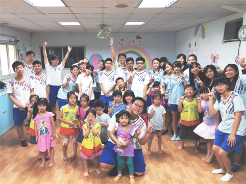
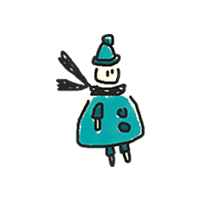

鄭蓉淇 Rong-Chi
我喜歡畫畫，喜歡攝影，喜歡音樂。個性樂觀，很愛笑。
l love drawing, photography, and music. i'm optimistics, and love laughing.
Experience 經歷
慈幼社
到幼稚園陪小孩子玩、假日淨灘、辦社區晚會活動
Going to Kindergarten to play with children. Attend Holiday Net Beach. Host community evening activities.
技能 Skills
善於畫插圖，平時會自學水彩、色鉛筆、速寫。熟悉Photoshop的使用，也會自學Premiere和Illustrator。喜歡平面設計、善於觀察。
Good at drawing illustrations. I usually self-study watercolors, colored pencils, and sketches. I am familiar with the use of Photoshop, will also learn Premiere and Illustrator. Like flat design, and I am good at observation.
興趣 Interests & 夢想 Dreams
喜歡畫畫，尤其是插畫，偶爾畫畫水彩、色鉛筆、速寫，也喜歡素描。喜歡音樂，喜歡吉他的聲音，假日會和朋友去看展覽或是到戶外練習攝影，喜歡文創的設計小物。夢想是能擁有一群志同道合的朋友，並且一起追逐目標。
love drawing,especially illustration. Sometimes I like to draw watercolor, color pencil, or sketch.I love music, and I particularly love the sound of guitar. I always go to the exhibition or go outside to practice photography with my friends on holiday, like the design of cultural and small creative things. My dream is to have a group of like-minded friends and chase their goals together.
作品集 Portfolio


學歷Education
Sept. 2005 ~ Jan. 2011
碧華國小Bihua Elementary School
Sept. 2011 ~ Jun. 2014
百齡國中Taipei Municipal Bailing High School
Sept. 2014 ~ Jun. 2007
復興高中Fu xìng senior high school